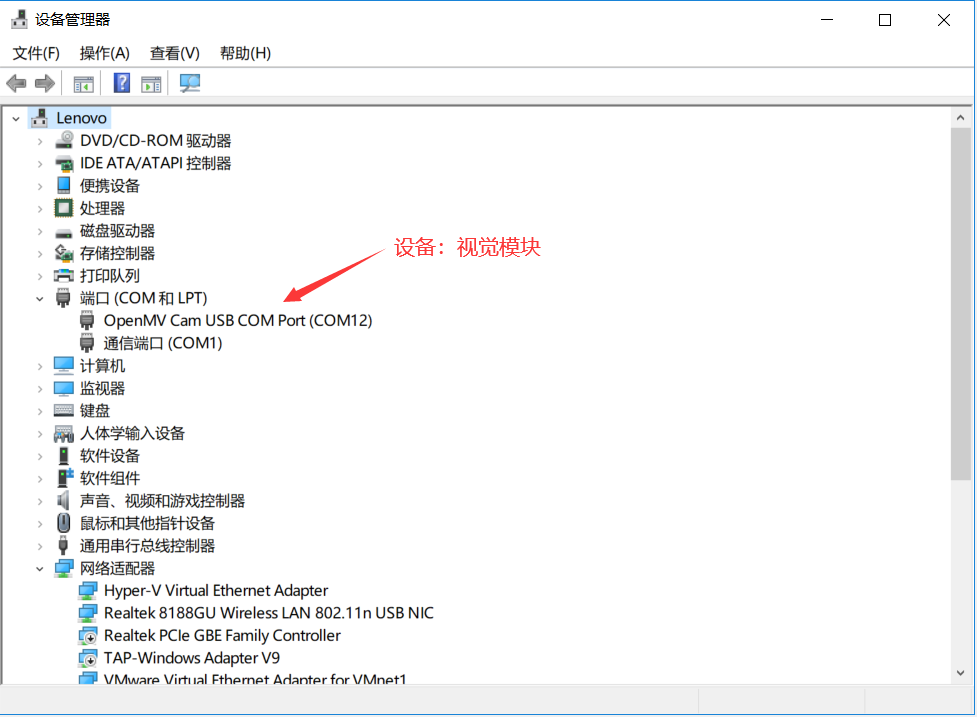

OpenAIE 视觉模块 使用说明文档¶
OpenAIE 视觉模块
简介¶
供电方式：USB TypeC（DC: 5V）
处理器: STM32H741VIT6，ARM® 32-bit Cortex®-M7 CPU，480MHz(1027 DMIPS)
存储：1MB RAM，2 MB flash.
图像传感器：30万像素彩色摄像头
- 应用：
颜色追踪
形状检测（圆形，矩形）
二维码识别
AprilTag 标记追踪
等
入门使用¶
点击下载 相关资料 提取码：3qo0 。
1. 驱动安装¶
模块通过 USB 连接电脑通信，通常情况下模块连接电脑会自动安装驱动，安装驱动后，将鼠标移动到我的电脑，右键属性–>设备管理器–>端口(COM和LPT)，可查看到设备连接信息，如下图所示：

若电脑没有自动安装驱动，则需要自己进行手动安装，请遵循以下步骤进行安装
板载功能使用教程¶
1. 板载LED¶
板载一颗RGB LED API
led.red.on()
led.red.off()
led.red.toggle()
led.green.on()
led.green.off()
led.green.toggle()
led.blue.on()
led.blue.off()
led.blue.toggle()
示例1：点亮LED
import time
from openaie import led
while True:
led.green.toggle()
time.sleep(500)
2. 板载按键¶
按下接低电平，弹起接高电平。 API:
button.is_pressed() 获取按键当前状态，返回的结果是 True：按键被按下；或者是 False: 按键未被按下。
示例1：按键控制开关灯
from openaie import *
led.green.on()
while(True):
if button.is_pressed():
time.sleep(5)
if button.is_pressed():
print("press")
led.green.toggle()
while (button.is_pressed()) :
pass
3. 语音识别¶
非特定人语音识别
添加识别关键词
#str：设别语句的拼音
#ret: 识别到关键词时的返回值
asr.add_cmd(str, ret)
开始运行
asr.run()
读取识别结果
asr.read()
注解
安静的环境中可获得较大的识别准确率
示例1：
from openaie import *
import time
asr.add_cmd("hong", 1) # 添加关键词“红”，编号为“1”。
asr.add_cmd("lv", 2) # 添加关键词“绿”，编号为“2”。
asr.add_cmd("lan", 3) # 添加关键词“蓝”，编号为“3”。
asr.add_cmd("kai deng", 4) # 添加关键词“开灯”，编号为“4”。
asr.add_cmd("guan deng", 5) # 添加关键词“关灯”，编号为“5”。
asr.run() # 开始识别
def asr_test(sel):
if sel == 1 :
led.red.on()
led.green.off()
led.blue.off()
elif sel == 2 :
led.red.off()
led.green.on()
led.blue.off()
elif sel == 3 :
led.red.off()
led.green.off()
led.blue.on()
elif sel == 4 :
led.red.on()
led.green.on()
led.blue.on()
elif sel == 5 :
led.red.off()
led.green.off()
led.blue.off()
while True:
asr_test(asr.get_res())
time.sleep(100)
9. 摄像头¶
原理 传感器参数 200万像素(OV2640)
API
# 重置并初始化摄像头
sensor.reset([freq=24000000, set_regs=True, dual_buff=False])
# 启动或关闭捕获图像功能
sensor.run(enable)
# 设置帧大小 VGA, QVGA
sensor.set_framesize(framesize[, set_regs=True])
# 设置帧格式 RGB565
sensor.set_pixformat(format[, set_regs=True])
# 拍照
sensor.snapshot()
# 关闭摄像头/切换摄像头
sensor.shutdown(enable/select)
# 跳帧
sensor.skip_frames([n,time])
# 对比度
sensor.set_contrast(contrast)
# 亮度
sensor.set_brightness(brightness)
# 饱和度
sensor.set_saturation(saturation)
# 自动增益
sensor.set_auto_gain(enable,gain_db)
# 垂直镜像
sensor.set_hmirror(enable)
示例1：字符串，图片显示
from openaie import *